Create an ordination biplot using ggplot2 including options for selecting axes, group color aesthetics, and selection of variables to plot.
ggord(...) # S3 method for default ggord( obs, vecs, axes = c("1", "2"), grp_in = NULL, cols = NULL, facet = FALSE, nfac = NULL, addpts = NULL, obslab = FALSE, ptslab = FALSE, ellipse = TRUE, ellipse_pro = 0.95, poly = TRUE, polylntyp = "solid", hull = FALSE, arrow = 0.4, labcol = "black", veccol = "black", vectyp = "solid", veclsz = 0.5, ext = 1.2, repel = FALSE, vec_ext = 1, vec_lab = NULL, size = 4, sizelab = NULL, addsize = size/2, addcol = "blue", addpch = 19, txt = 4, alpha = 1, alpha_el = 0.4, xlims = NULL, ylims = NULL, var_sub = NULL, coord_fix = TRUE, parse = TRUE, grp_title = "Groups", force = 1, max.overlaps = 10, exp = c(0, 0), ... ) # S3 method for PCA ggord(ord_in, grp_in = NULL, axes = c("1", "2"), ...) # S3 method for MCA ggord(ord_in, grp_in = NULL, axes = c("1", "2"), ...) # S3 method for mca ggord(ord_in, grp_in = NULL, axes = c("1", "2"), ...) # S3 method for acm ggord(ord_in, grp_in = NULL, axes = c("1", "2"), ...) # S3 method for prcomp ggord(ord_in, grp_in = NULL, axes = c("1", "2"), ...) # S3 method for princomp ggord(ord_in, grp_in = NULL, axes = c("1", "2"), ...) # S3 method for metaMDS ggord(ord_in, grp_in = NULL, axes = c("1", "2"), ...) # S3 method for lda ggord(ord_in, grp_in = NULL, axes = c("1", "2"), ...) # S3 method for pca ggord(ord_in, grp_in = NULL, axes = c("1", "2"), ...) # S3 method for coa ggord(ord_in, grp_in = NULL, axes = c("1", "2"), ...) # S3 method for ca ggord(ord_in, grp_in = NULL, axes = c("1", "2"), ...) # S3 method for ppca ggord(ord_in, grp_in = NULL, axes = NULL, ...) # S3 method for rda ggord(ord_in, grp_in = NULL, axes = c("1", "2"), ...) # S3 method for capscale ggord(ord_in, grp_in = NULL, axes = c("1", "2"), ...) # S3 method for dbrda ggord(ord_in, grp_in = NULL, axes = c("1", "2"), ...) # S3 method for cca ggord(ord_in, grp_in = NULL, axes = c("1", "2"), ...) # S3 method for dpcoa ggord(ord_in, grp_in = NULL, axes = c("1", "2"), ...)
Arguments
| ... | arguments passed to or from other methods |
|---|---|
| obs | matrix or data frame of axis scores for each observation |
| vecs | matrix or data frame of axis scores for each variable |
| axes | chr string indicating which axes to plot |
| grp_in | vector of grouping objects for the biplot, must have the same number of observations as the original matrix used for the ordination |
| cols | chr string of optional colors for |
| facet | logical indicating if plot is faceted by groups in |
| nfac | numeric indicating number of columns if |
| addpts | optional matrix or data.frame of additional points if constrained ordination is used (e.g., species locations in cca, rda) |
| obslab | logical if the row names for the observations in |
| ptslab | logical if the row names for the additional points ( |
| ellipse | logical if confidence ellipses are shown for each group, method from the ggbiplot package |
| ellipse_pro | numeric indicating confidence value for the ellipses |
| poly | logical if confidence ellipses are filled polygons, otherwise they are shown as empty ellipses |
| polylntyp | chr string for line type of polygon outlines if |
| hull | logical if convex hull is drawn around points or groups if provided |
| arrow | numeric indicating length of the arrow heads on the vectors, use |
| labcol | chr string for color of text labels on vectors |
| veccol | chr string for color of vectors |
| vectyp | chr string for line type of vectors, options are |
| veclsz | numeric for line size on vectors |
| ext | numeric indicating scalar distance of the labels from the arrow ends |
| repel | logical if overlapping text labels on vectors use |
| vec_ext | numeric indicating a scalar extension for the ordination vectors |
| vec_lab | list of optional labels for vectors, defaults to names from input data. The input list must be named using the existing variables in the input data. Each element of the list will have the desired name change. |
| size | numeric indicating size of the observation points or a numeric vector equal in length to the rows in the input data |
| sizelab | chr string indicating an alternative legend title for size |
| addsize | numeric indicating size of the species points if addpts is not |
| addcol | numeric indicating color of the species points if addpts is not |
| addpch | numeric indicating point type of the species points if addpts is not |
| txt | numeric indicating size of the text labels for the vectors, use |
| alpha | numeric transparency of points and ellipses from 0 to 1 |
| alpha_el | numeric transparency for confidence ellipses, also applies to filled convex hulls |
| xlims | two numeric values indicating x-axis limits |
| ylims | two numeric values indicating y-axis limits |
| var_sub | chr string indcating which labels to show. Regular expression matching is used. |
| coord_fix | logical indicating fixed, equal scaling for axes |
| parse | logical indicating if text labels are parsed |
| grp_title | chr string for legend title |
| force | numeric passed to |
| max.overlaps | numeric passed to |
| exp | numeric of length two for expanding x and y axes, passed to |
| ord_in | input ordination object |
Value
A ggplot object that can be further modified
Details
Explained variance of axes for triplots are constrained values.
See also
Examples
library(ggplot2)#> Warning: package 'ggplot2' was built under R version 4.0.5# principal components analysis with the iris data set # prcomp ord <- prcomp(iris[, 1:4]) p <- ggord(ord, iris$Species) p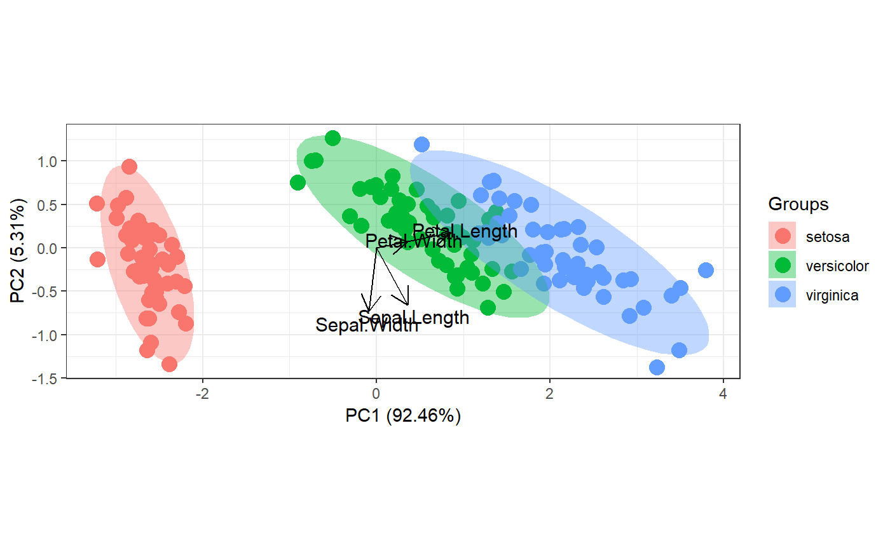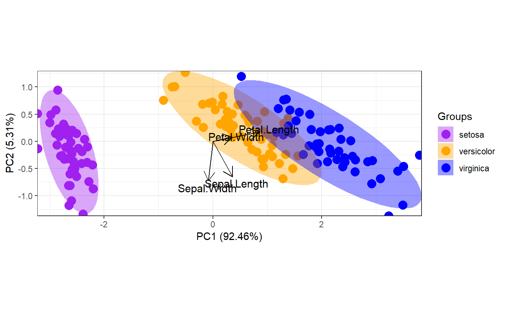#> #>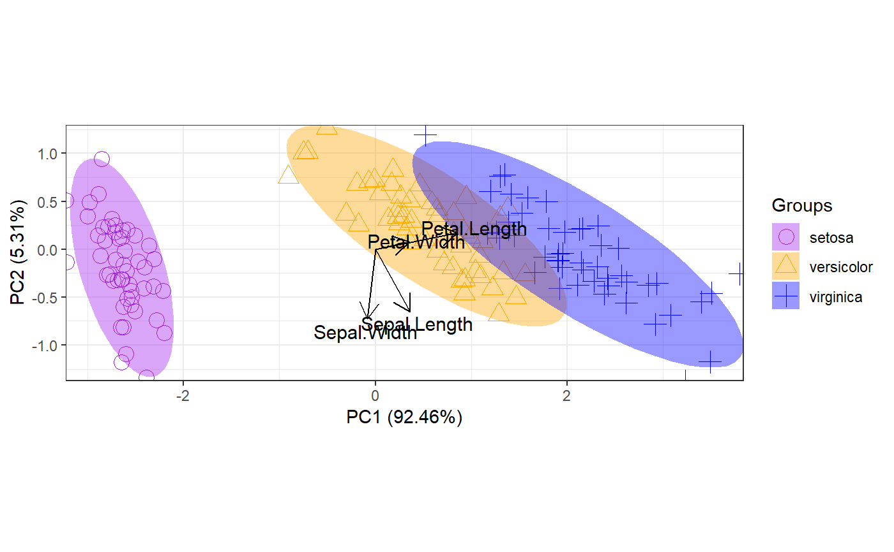p + theme_classic()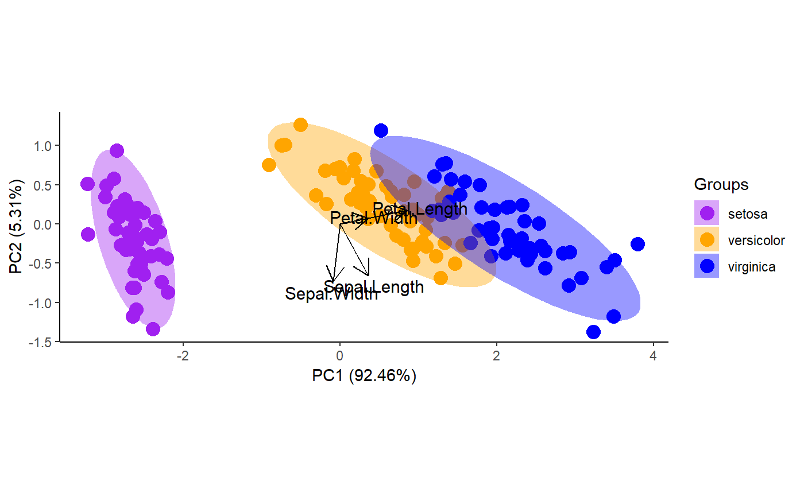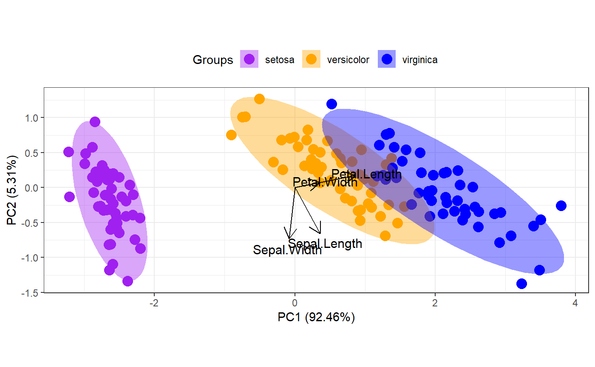# change the vector labels with vec_lab new_lab <- list(Sepal.Length = 'SL', Sepal.Width = 'SW', Petal.Width = 'PW', Petal.Length = 'PL') p <- ggord(ord, iris$Species, vec_lab = new_lab) p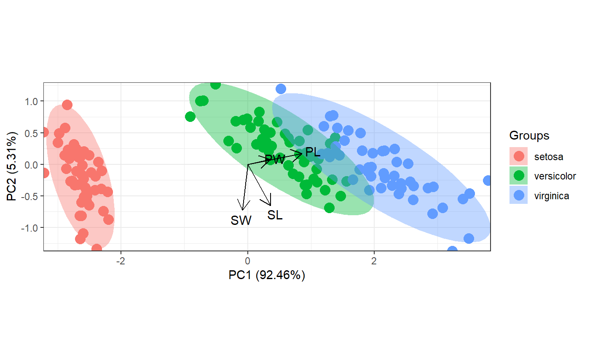# faceted by group p <- ggord(ord, iris$Species, facet = TRUE, nfac = 3) p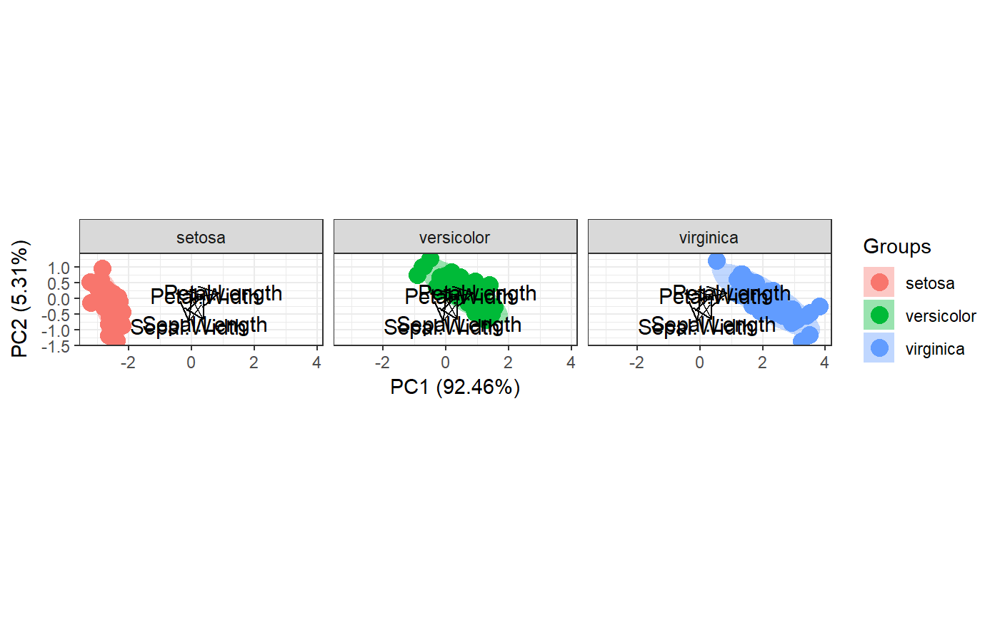# principal components analysis with the iris dataset # princomp ord <- princomp(iris[, 1:4]) ggord(ord, iris$Species)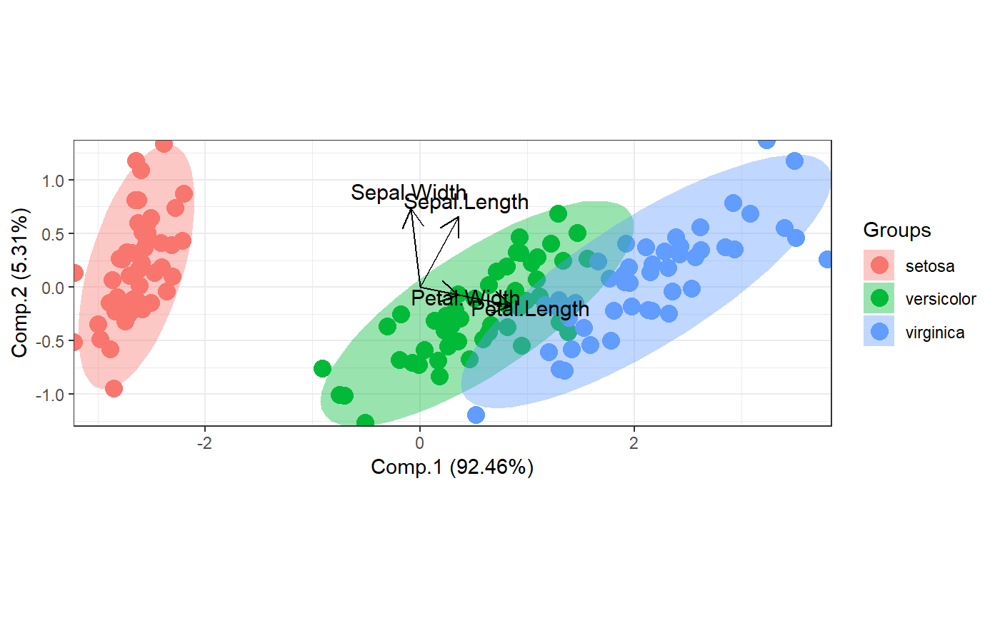#> Warning: package 'FactoMineR' was built under R version 4.0.3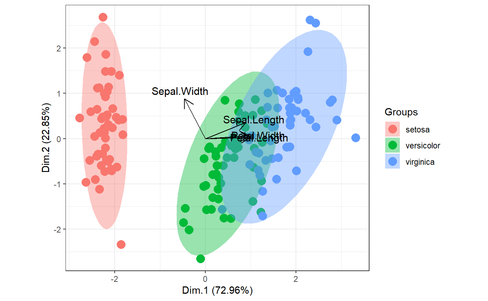#> #>#> #> #># multiple correspondence analysis with the tea dataset # MCA data(tea, package = 'FactoMineR') tea <- tea[, c('Tea', 'sugar', 'price', 'age_Q', 'sex')] ord <- MCA(tea[, -1], graph = FALSE) ggord(ord, tea$Tea, parse = FALSE) # use parse = FALSE for labels with non alphanumeric characters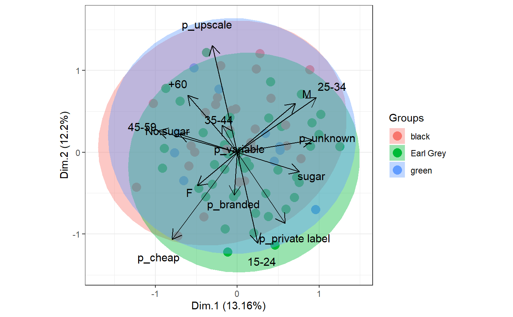# multiple correspondence analysis with the tea dataset # mca library(MASS) ord <- mca(tea[, -1]) ggord(ord, tea$Tea, parse = FALSE) # use parse = FALSE for labels with non alphanumeric characters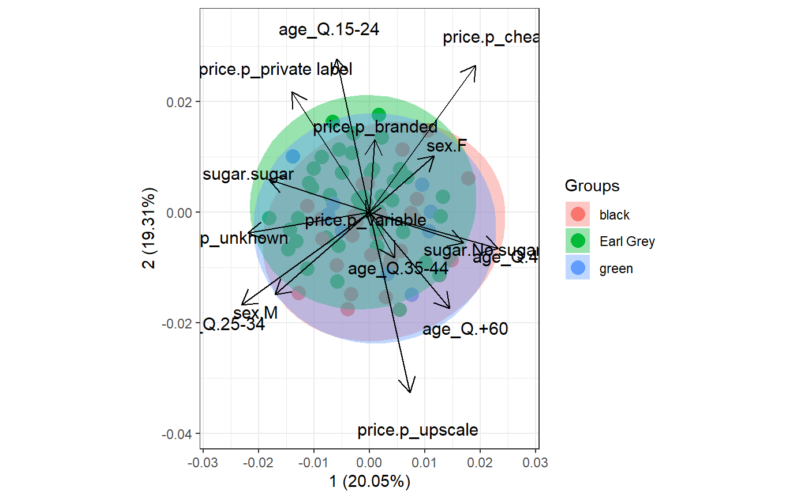# multiple correspondence analysis with the tea dataset # acm ord <- dudi.acm(tea[, -1], scannf = FALSE) ggord(ord, tea$Tea, parse = FALSE) # use parse = FALSE for labels with non alphanumeric characters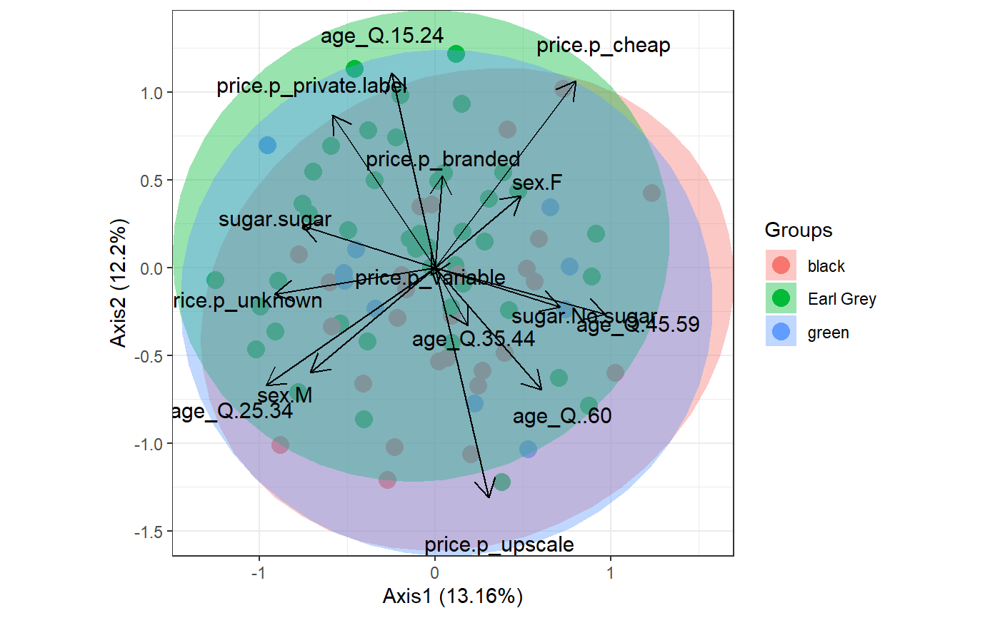#>#>#>#> Run 0 stress 0.03775523 #> Run 1 stress 0.03775523 #> ... Procrustes: rmse 8.400153e-06 max resid 5.751231e-05 #> ... Similar to previous best #> Run 2 stress 0.06026068 #> Run 3 stress 0.04709713 #> Run 4 stress 0.05266564 #> Run 5 stress 0.06599907 #> Run 6 stress 0.03775601 #> ... Procrustes: rmse 8.317375e-05 max resid 0.0002981103 #> ... Similar to previous best #> Run 7 stress 0.04709622 #> Run 8 stress 0.037756 #> ... Procrustes: rmse 8.295497e-05 max resid 0.0002953507 #> ... Similar to previous best #> Run 9 stress 0.0480412 #> Run 10 stress 0.0377552 #> ... New best solution #> ... Procrustes: rmse 1.297203e-05 max resid 0.000120181 #> ... Similar to previous best #> Run 11 stress 0.05537489 #> Run 12 stress 0.0377553 #> ... Procrustes: rmse 2.435835e-05 max resid 0.0001080432 #> ... Similar to previous best #> Run 13 stress 0.05290128 #> Run 14 stress 0.05317363 #> Run 15 stress 0.03775577 #> ... Procrustes: rmse 7.678682e-05 max resid 0.0003291538 #> ... Similar to previous best #> Run 16 stress 0.04367521 #> Run 17 stress 0.05538247 #> Run 18 stress 0.04367517 #> Run 19 stress 0.03775529 #> ... Procrustes: rmse 2.556968e-05 max resid 0.0001074563 #> ... Similar to previous best #> Run 20 stress 0.0471375 #> *** Solution reachedggord(ord, iris$Species)# linear discriminant analysis # example from lda in MASS package ord <- lda(Species ~ ., iris, prior = rep(1, 3)/3) ggord(ord, iris$Species)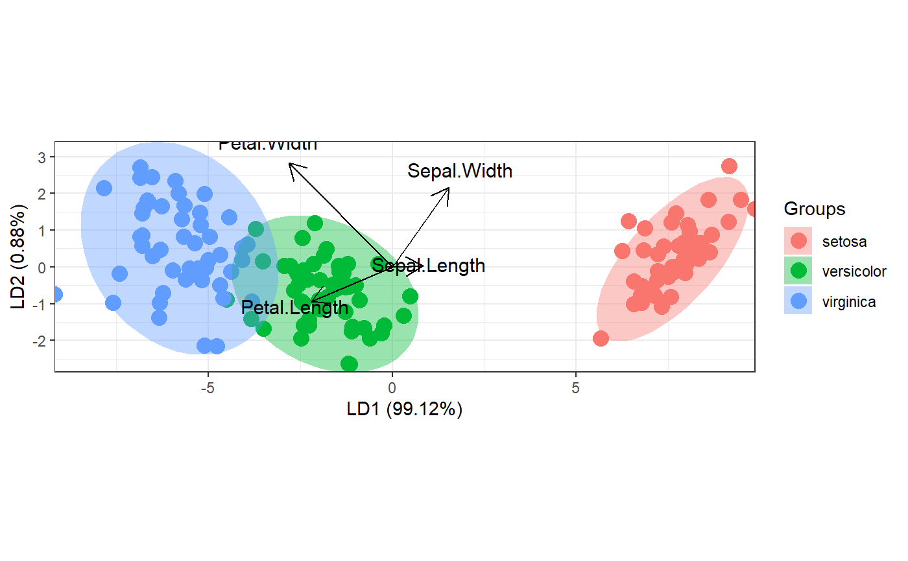# correspondence analysis # dudi.coa ord <- dudi.coa(iris[, 1:4], scannf = FALSE, nf = 4) ggord(ord, iris$Species)#> Warning: package 'ca' was built under R version 4.0.3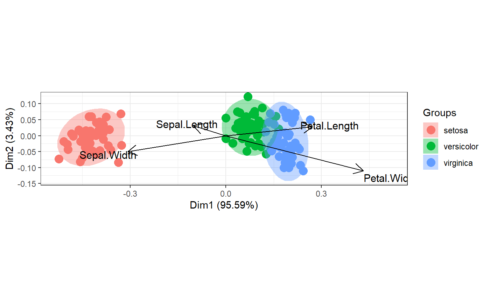# double principle coordinate analysis (DPCoA) library(ade4) data(ecomor) grp <- rep(c("Bu", "Ca", "Ch", "Pr"), each = 4) # sample groups dtaxo <- dist.taxo(ecomor$taxo) # taxonomic distance between species ord <- dpcoa(data.frame(t(ecomor$habitat)), dtaxo, scan = FALSE, nf = 2) ggord(ord, grp_in = grp, ellipse = FALSE, arrow = 0.2, txt = 3)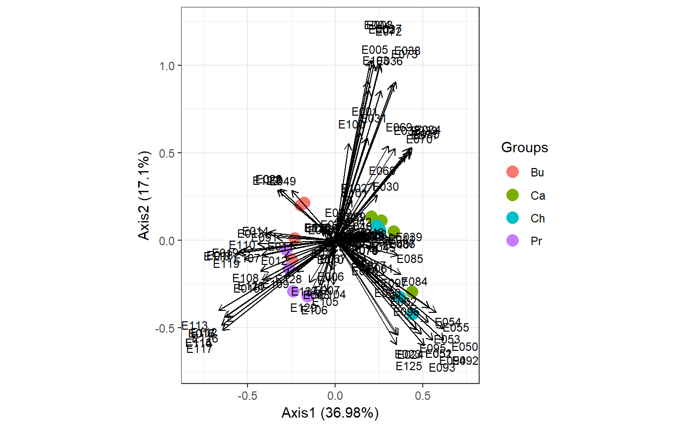#> Warning: package 'adephylo' was built under R version 4.0.3#> #> #>library(phylobase)#> Warning: package 'phylobase' was built under R version 4.0.3library(ape)#> Warning: package 'ape' was built under R version 4.0.3#> #>#> #> #>data(lizards) # example from help file, adephylo::ppca # original example from JOMBART ET AL 2010 # build a tree and phylo4d object liz.tre <- read.tree(tex=lizards$hprA) liz.4d <- phylobase::phylo4d(liz.tre, lizards$traits) # remove duplicated populations liz.4d <- phylobase::prune(liz.4d, c(7,14)) # correct labels lab <- c("Pa", "Ph", "Ll", "Lmca", "Lmcy", "Phha", "Pha", "Pb", "Pm", "Ae", "Tt", "Ts", "Lviv", "La", "Ls", "Lvir") tipLabels(liz.4d) <- lab # remove size effect dat <- tdata(liz.4d, type="tip") dat <- log(dat) newdat <- data.frame(lapply(dat, function(v) residuals(lm(v~dat$mean.L)))) rownames(newdat) <- rownames(dat) tdata(liz.4d, type="tip") <- newdat[,-1] # replace data in the phylo4d object # create ppca liz.ppca <- ppca(liz.4d,scale=FALSE,scannf=FALSE,nfposi=1,nfnega=1, method="Abouheif") # plot ggord(liz.ppca)#> Error in nrow(object@edge): object 'liz.4d' not found# distance-based redundancy analysis # dbrda from vegan data(varespec) data(varechem) ord <- dbrda(varespec ~ N + P + K + Condition(Al), varechem, dist = "bray") ggord(ord)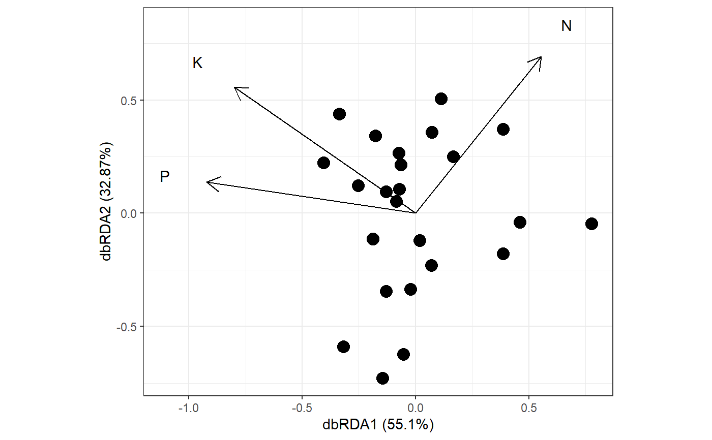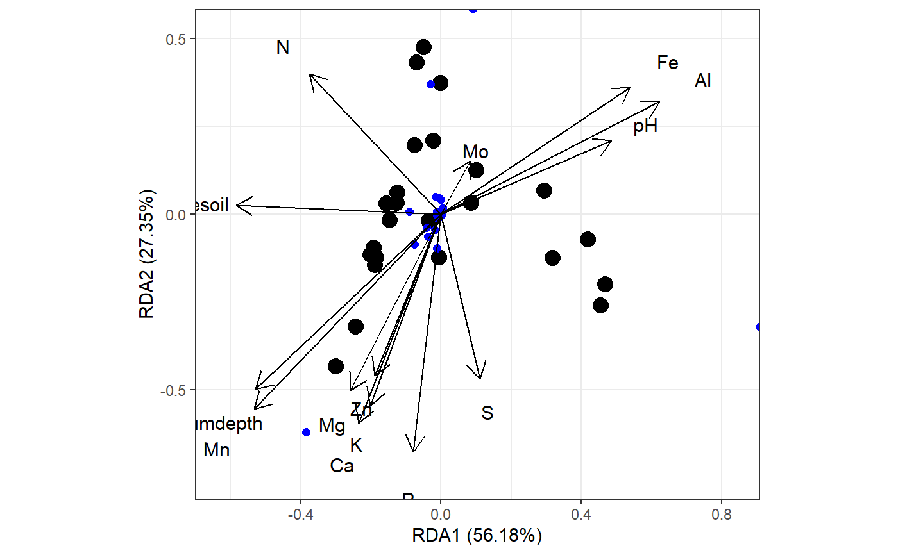# distance-based redundancy analysis # capscale from vegan ord <- capscale(varespec ~ N + P + K + Condition(Al), varechem, dist = "bray") ggord(ord)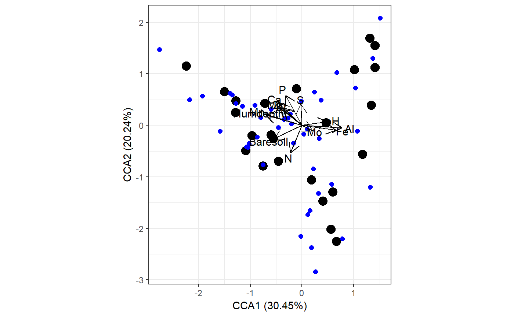# species points as text # suppress site points ggord(ord, ptslab = TRUE, size = NA, addsize = 5, parse = TRUE)#> Warning: Removed 24 rows containing missing values (geom_point).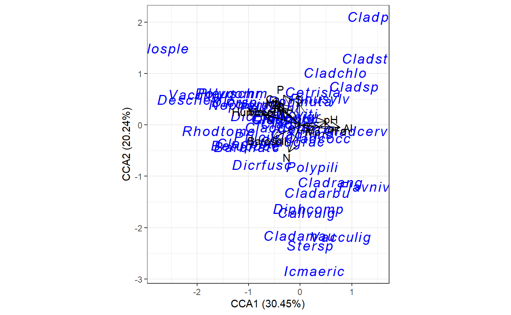